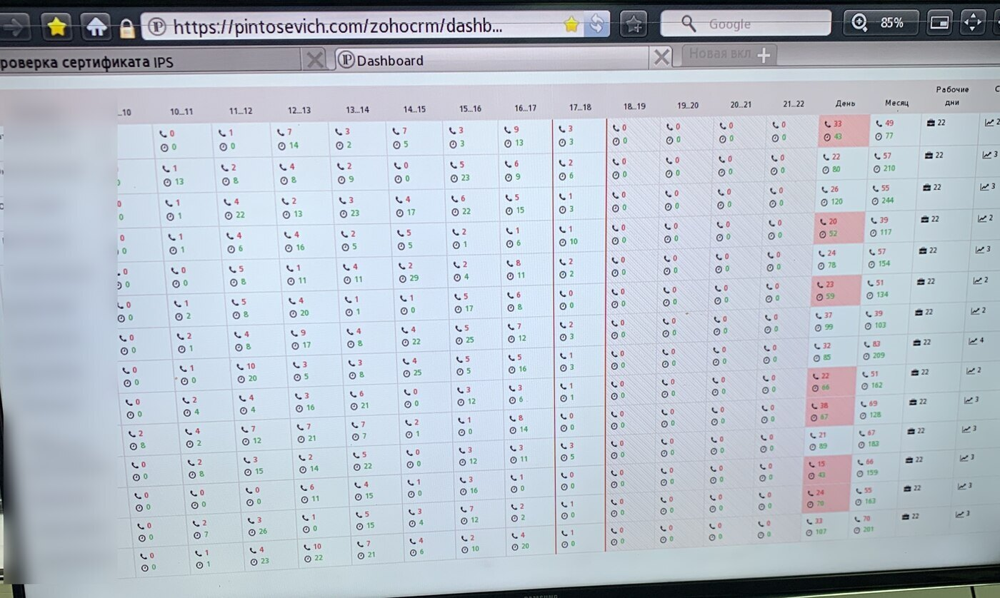
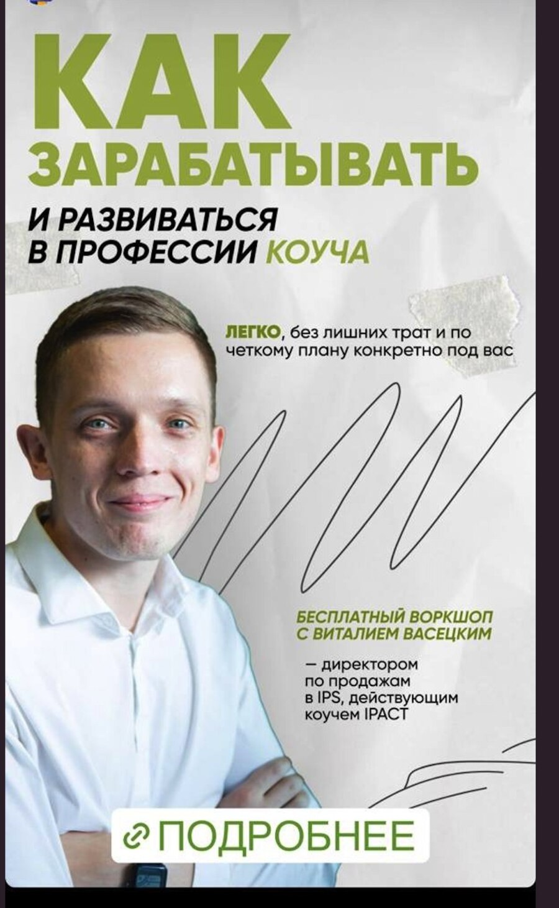
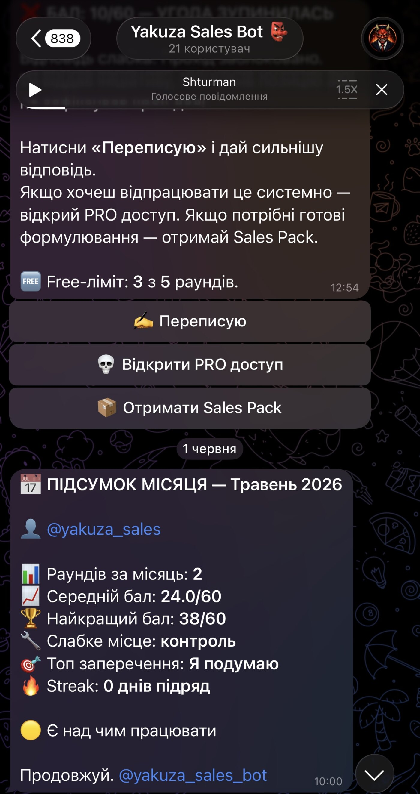

Було
Дзвінки з 9 до 22. Без екрана керівник бачить тільки тих, хто сидить поруч. Скрипт живе в PDF і на роздруківці. Новий менеджер вчить патерн руками. Хто скільки додзвонився після 18:00 — здогадка.
Кейси
Екран зміни, карта розмови, бал у боті — і що з цього реально змінилось. Якщо факт не видно на кадрі, ми його не пишемо.
Метод · 2021 · Isaac Pintosevich Systems
У 2021-му зміну Іцхака було видно погодинно. Не в презентації — на екрані, який бачила вся зміна. Віталій вів цей контур як директор з продажів IPS і діючий коуч IPACT.

Дзвінки з 9 до 22. Без екрана керівник бачить тільки тих, хто сидить поруч. Скрипт живе в PDF і на роздруківці. Новий менеджер вчить патерн руками. Хто скільки додзвонився після 18:00 — здогадка.
На кадрі 12 березня 2021 видно не «відділ працює», а що після 18:00 зміна фактично зупиняється — і хто скільки встиг до того. Контроль став фактом на екрані. Скрипт перестав бути текстом у шухляді.
Виручку не наводимо свідомо — її не видно на кадрі. Видно інше, і воно дорожче: після 18:00 зміна зупинялась, і до появи екрана про це ніхто не знав.
Перший екран показав, що ми втрачаємо не конверсію, а останні чотири години дня. Це не лікується мотивацією.
Віталій Васецький

2021-й тут не тому, що це останнє, що ми зробили. Він тут тому, що це найстаріший доказ. Погодинний екран зміни працював ще до того, як зʼявився ШІ, який сьогодні малює такі екрани за секунду. Метод не змінився — змінився інструмент. Нижче той самий контур у 2026-му: та сама карта розмови, той самий облік по менеджеру, тільки бал ставить бот, а не старший зміни.
Той самий метод · 2026
Менеджер «почуває», що вміє заперечення. Керівник не бачить, яке саме зливає зміну.
Раунд у боті. Оцінка з 60. Слабке місце й топ-заперечення в підсумку місяця. Далі — переписати сильніше або відкрити PRO.
24 з 60 — типовий бал живого менеджера на холодному раунді. Це не «погано», це нормальний старт. Погано — коли цієї цифри немає взагалі й продажі обговорюють словами «треба краще дотискати».
Є рахунок, а не настрій. Видно, куди пішли решта 36 балів: контроль розмови й заперечення «Я подумаю». Це задача на наступний тиждень, а не розмова «треба краще продавати».
Бот не оре замість менеджера. Він ставить бал і показує, де злив.
Віталій Васецький

Ще в роботі
Тут немає кадрів, тому немає й картинок. Описуємо тільки суть роботи.
Воронка, скрипт першого й повторного контакту, заперечення «подумаю / дешевше», SLA на нову заявку.
Наша теза: франшизу зливають на третьому дзвінку, коли немає наступного кроку.
ЄУ Асистент: заявка, дзвінок і наступний крок в одному маршруті.
Наша теза: у сезон виграє не спіч, а господар заявки.
Досвід побудови контуру продажів у forex. Свідомо не подаємо як іменний кейс і не показуємо логотипів.
Перш ніж напишете
Договір і NDA — до передачі вибірки, не після. Мінімальний погоджений обсяг і зафіксована дата видалення. Для кожного клієнта окремий робочий простір, доступ — лише тим, кому він потрібен. Матеріали не йдуть у навчання моделей без окремої письмової згоди.
І не мусимо. Ми не оцінюємо ваш продукт і не пишемо вам УТП. Ми міряємо механіку розмови: чи була кваліфікація, чи зняли критерій вибору, хто веде діалог і на якому кроці зупинився клієнт. Специфіку ринку в звіт даєте ви — ми показуємо, де менеджер її не використав.
Аудит — це перший тиждень роботи нормального РОПа: він читає діалоги й складає карту, де зливається. Різниця в ціні: 24 000 грн (до 5 менеджерів) або 36 000 грн (6–15) разово проти місячного окладу та кількох місяців пошуку. Якщо після звіту стане очевидно, що вам потрібен саме РОП, ми так і напишемо у висновку.
Instagram · @yakuza_sales
В @yakuza_sales я розбираю заявки, дзвінки, CRM і ШІ для відділу продажів на навчальних прикладах — 18 років у продажах, без теорії з ютубу.
Підписатись на @yakuza_salesБезкоштовно · Direct
Напиши «СИСТЕМА» в Direct @yakuza_sales — і я скину чекліст прямо в повідомлення: 10 останніх заявок, дублікати, три показники без дашборда і 5 промптів для ШІ.
Написати «СИСТЕМА»Наступний крок
Дві хвилини на кваліфікацію — без даних ваших клієнтів. Якщо формат не підійде, скажемо прямо.
Стратегічна сесія STRATEGIC YAKUZA — 60 хв у Zoom. Спершу погоджуємо задачу й час → оплата 4 000 грн погодженим способом → після перевірки надходження слот підтверджено.